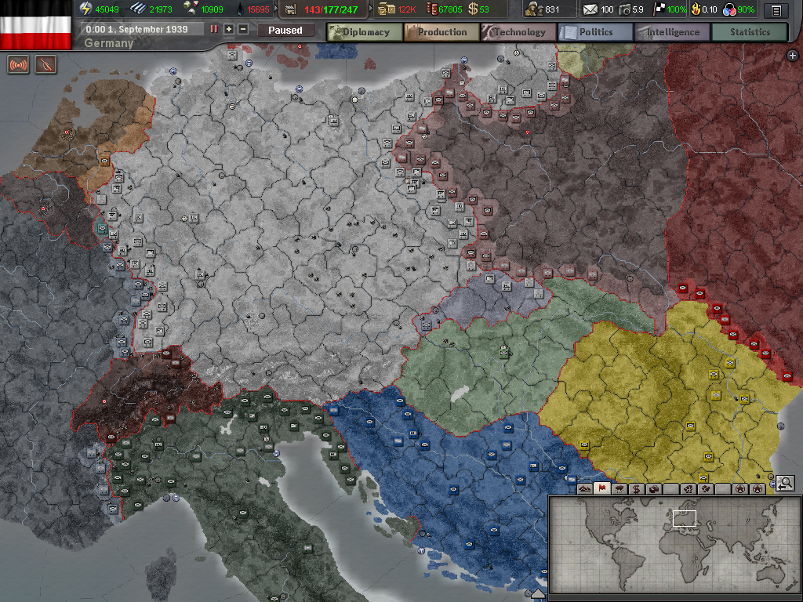
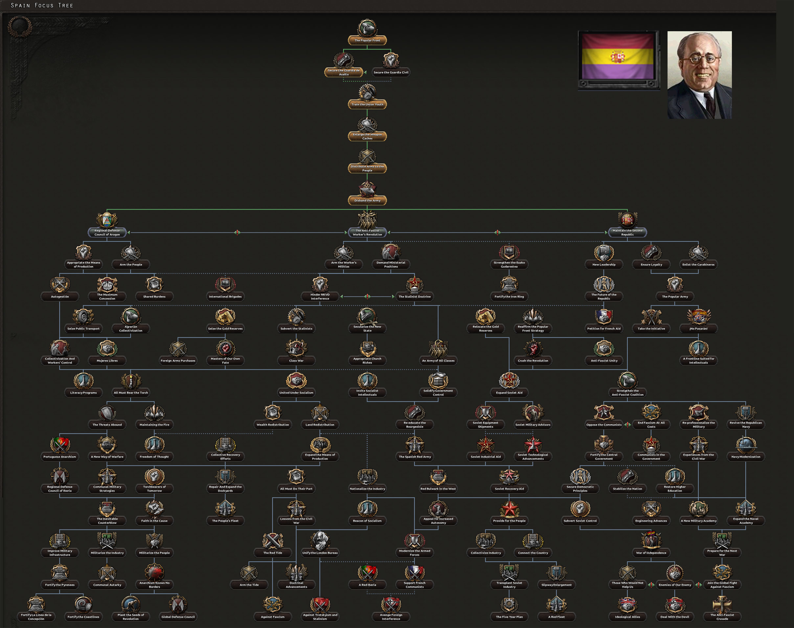
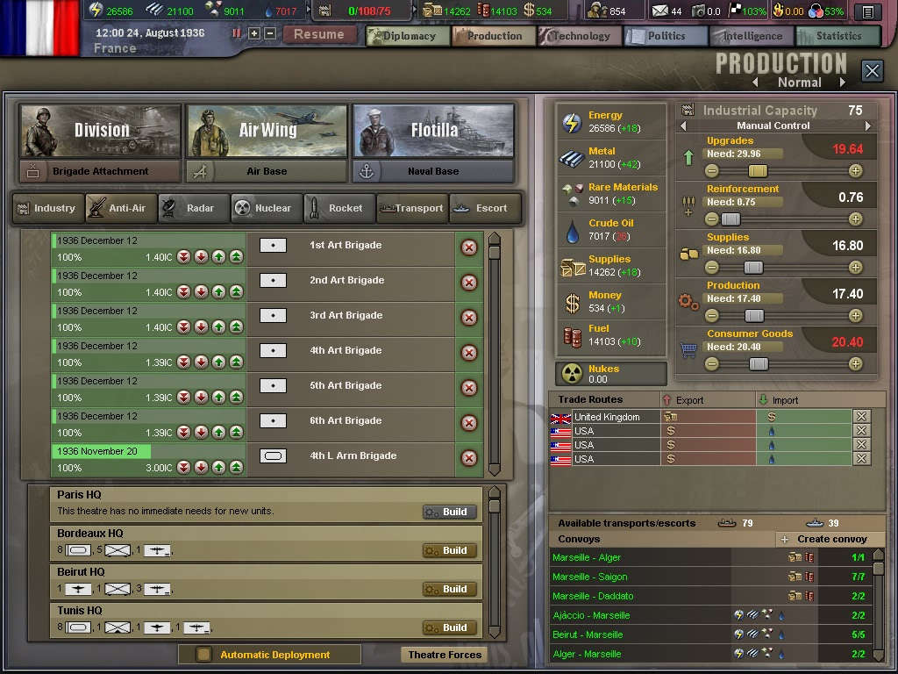
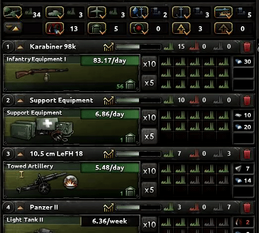

Comparision to Previous Iteration:
Compared to Hearts of Iron 3, Hearts of Iron 4 is a major upgrade in both mechanics and graphics.
Graphics:
The graphics have seen a large improvment from the 3rd to 4th game. The map has more details and textures that let you see the terrain of the land. The new map is also 3d and shows height differences from hills and mountains. Here are some screenshots from each game comparing the graphics.
Hearts of Iron 4 map:

Hearts of Iron 3 map:
Mechanics:
Many of the mechanic systems have changed, the largest changes come in production and the politics of how the country you pick goes on its path.
Political Changes:
In Hearts of Iron 4 every major nation and some minor nations have decisions that they can take that follow a tree. These decisions are based on historical events and also have some decisions that can be ahistorical and follow a path that wasn't taken in history.
Focus Tree:
Economy Changes:
In Hearts of Iron 3 the economy was based on a single number of factories that could be distributed between different categories with sliders.
In Hearts of Iron 4 economy is based on three facotry types, Civilian, Military, and Naval. Civilian factories are used to build any type of facotry or other buidings like forts and airfields. Military factories are used to production weapons and vehicles. Naval factories are used to build ships. You have to assign factories manually for them to be used.
